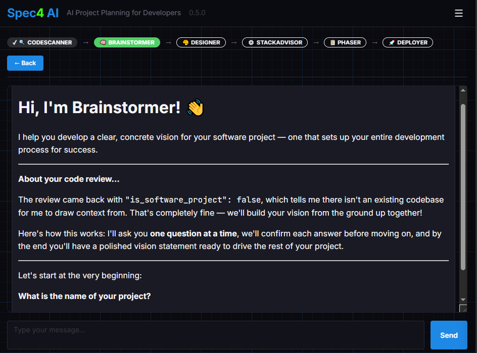
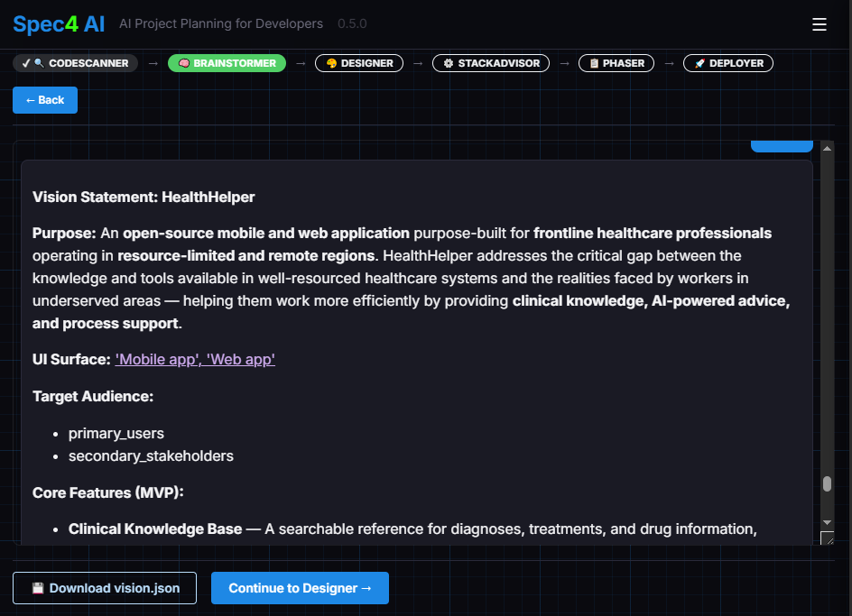
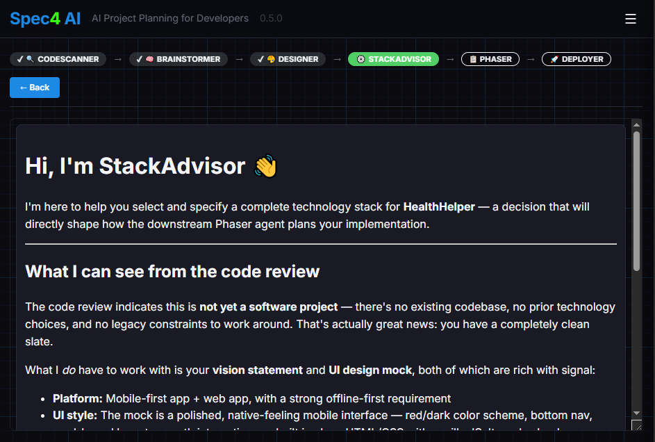
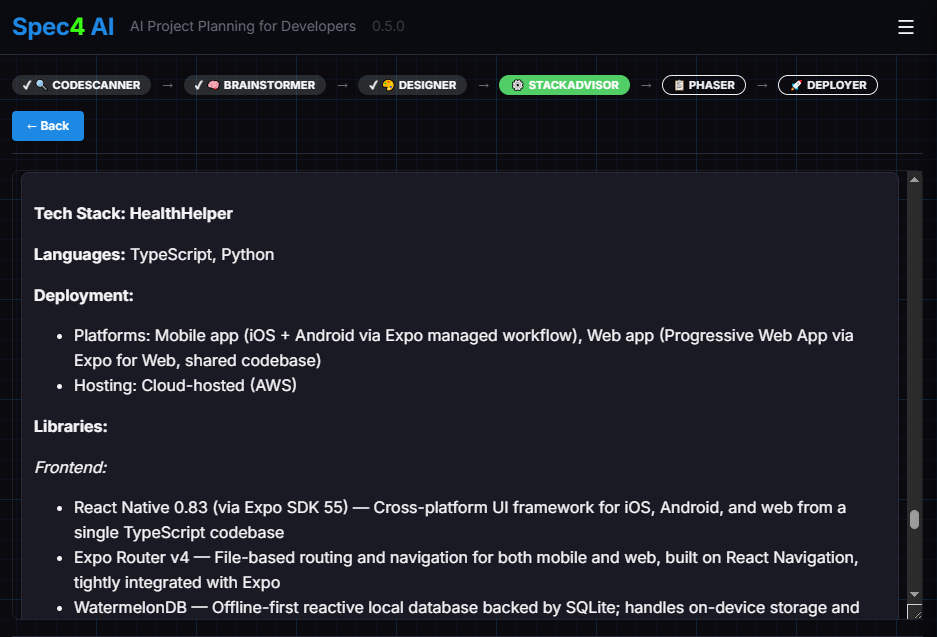
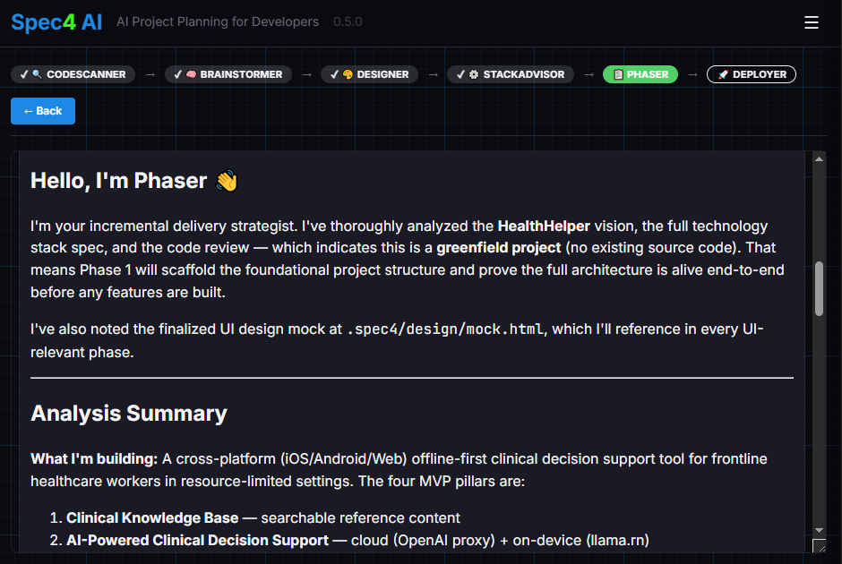
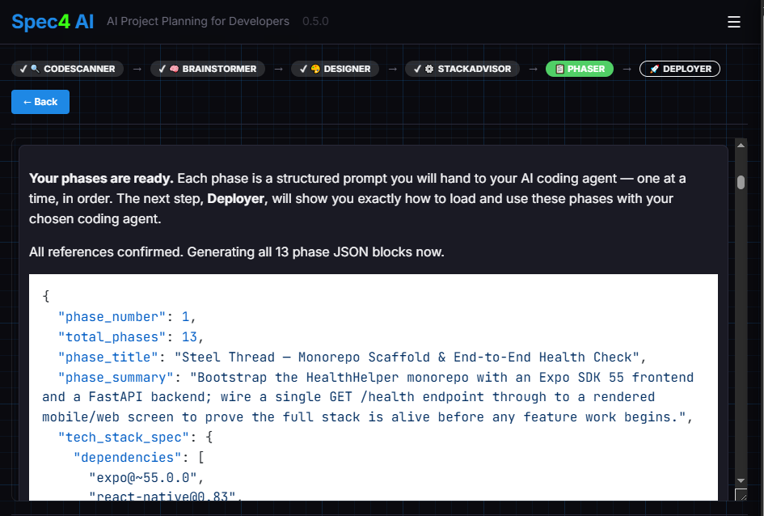

Understand where you're starting from.
If you're building something new from scratch, you can skip straight to Brainstormer. But if you're extending or redesigning an existing project, CodeScanner reads your codebase and produces a structured analysis before any planning begins.
It walks through six areas — project type, architecture, languages and frameworks, build system, coding style, and notable observations — and asks you to confirm or correct each one. The result travels with the spec through every downstream agent.
code_review.json


Turn a rough idea into a well-defined vision.
Brainstormer is a collaborative agent that asks you one focused question at a time. It surfaces assumptions, identifies gaps, and pushes back when something is unclear — without overwhelming you with a form to fill out.
Each answer adds to a running vision statement you can review and revise at any step. Alongside it, Brainstormer writes a behavioral spec for every feature — purpose, inputs, outputs, success criteria, failure modes — so downstream agents work from specifics, not summaries. Brainstormer deliberately stays in its lane: it won't ask about technology, hosting, or libraries. The focus is entirely on what you're building, who it's for, and why it matters.
vision.json + feature_specs.json


Decide what the AI in your app should actually do.
Agentifier reads your vision and feature specs and surfaces every place AI can genuinely help. You choose how ambitious to be in an interactive selection panel — Agentifier keeps the selection consistent, automatically pulling in anything your choices depend on.
Each selected capability is placed on a nine-tier complexity ladder — from plain deterministic code up through RAG, tool agents, and multi-agent collaboration — and specced in full: inputs, outputs, mechanisms, evals, and failure modes, prioritized into steel thread, MVP, and later. In a hurry? ⏩ Fast Forward sweeps the remaining decisions with Agentifier's best recommendations, then presents the complete set for your review.
ai_features.json


See it before you build it.
Designer reads your vision statement and generates a self-contained HTML mock of your application's look and feel — no frameworks, no build step, no external dependencies. Open it in any browser, share it with stakeholders, or hand it to your coding agent as a visual spec.
Designer plans before it draws: it first writes a structured design manifest tying every screen element back to your features — including your AI features, rendered as real in-context interactions — then generates the mock from the plan. Iterative refinement is built in: describe what to change and it regenerates, guided by screenshots or reference images you like or dislike. Designer runs in parallel — start it any time after Brainstormer — and it's skipped automatically for CLI and terminal projects.
design/mock.html + design/manifest.json

Pick a technology stack with confidence.
StackAdvisor takes your vision, your AI feature specs, and your UI mock if Designer ran, and walks you through every layer of the technology decision: programming language, deployment platforms, hosting approach, libraries for each functional area, and coding style. Agentifier's tier choices shape the recommendations — a RAG feature brings a vector store into the conversation, a tool agent brings a tool harness.
For each choice, it presents ranked options with honest trade-off analysis — maintenance status, adoption, footprint, what you'd have to write yourself without it. When a code review is present, it actively flags conflicts between what you have and what you're considering. ⏩ Fast Forward is available whenever you'd rather review a complete recommendation than decide topic by topic.
stack.json


A plan your coding agent can actually execute.
Phaser takes the vision, AI feature specs, stack spec, and design mock and produces a numbered sequence of implementation phases — one self-contained Markdown file per phase, with a summary, dependency list, configuration requirements, step-by-step instructions, a risk assessment, and an exact verification command. Your AI features are placed explicitly, steel-thread capabilities first.
Phase 1 is always a Steel Thread — the minimal end-to-end connection that proves your stack is wired together before any feature development begins. If a phase would require a dependency not in your stack spec, Phaser stops and asks for your approval first. ⏩ Fast Forward is here too when you want the full plan drafted for review in one sweep.
phases/phase<N>.md (downloadable as phases.zip)


Plan your path to production.
Deployer works in two parts. First, you tell it which AI coding agent you'll use (Claude Code, Hermes, Kiro, Antigravity, and others are supported). Deployer searches for current documentation on that agent and gives you precise guidance for loading and executing Spec4 phases — exact syntax, recommended workflow, and known pitfalls.
Second, Deployer walks through your deployment strategy one question at a time: target platform, containerization, CI/CD pipeline, environment configuration, monitoring — and the AI channel: keys, observability, evals, and cost controls in production. For cloud deployments, it can generate complete Terraform infrastructure scripts, and on new projects it writes your repository's README. ⏩ Fast Forward is available here as well.
deployment-plan.md + project README.md